2．张量的概念
为了建立由里奇所引进的张量的概念，我们考虑函数
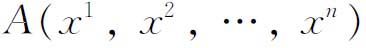
。我们用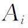
表示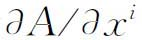
。于是，表达式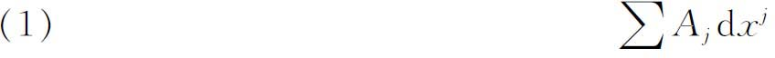
在形如
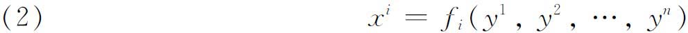
的变换下是一个微分不变量。这里假定函数
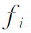
具有所需要的各阶导数，并且变换是可逆的，从而有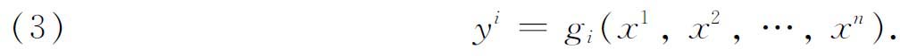
在变换（2）下，表达式（1）变成
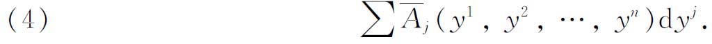
然而，
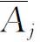
并不等于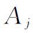
。而是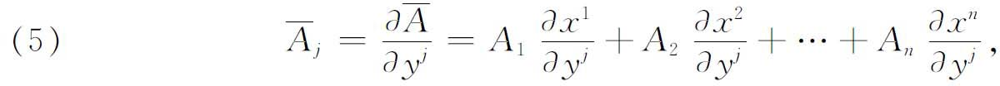
在这里Ai中所有的
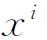
应当理解为要换成它们用所有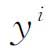
表示的式子。这样，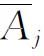
就通过变换（5）的特殊规则同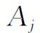
相联系，在（5）中包含变换的一阶导数。里奇的想法是，不把注意力集中在不变的微分形式（1）上，只要处理函数组
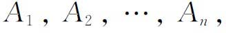
就够了，而且更为迅捷，他把这个分量组称为一个张量，只要在坐标变换下新的分量组
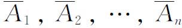
同原来的分量组有变换规则（5）的那种关系。正是这种明确地突出函数组（或系）与变换规则，成了里奇对微分不变量这一课题的研究方法的标志。数量函数A的梯度的分量
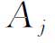
所构成的组，是1阶协变张量（covariant tensor）的一个例子。一个函数组（或系）表征一个不变量，这一概念本来并不新鲜，因为在里奇时代向量已经为人所共知。向量用它在一个坐标系中的分量表示，并且，如果向量在坐标变换下保持不变，如像它本来应该的那样，那么这些分量也要受一个变换规则的制约。但是，里奇所引进的新的系统却更要一般得多，并且着重于变换规则这一点也是新的。作为里奇所引进的观点的另一个例子，我们考虑距离元素的表达式。它由下式给出：
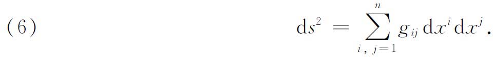
根据几何的理由，在坐标变换下距离ds的值应保持不变。然而，如果我们作变换
（2）并把新的表达式写成形式
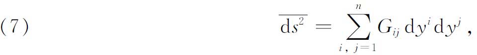
则
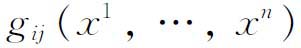
将不等于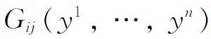
（这时全体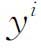
的值和全体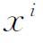
的值表示同一个点），而有关系式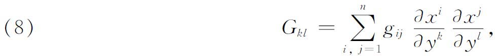
这时
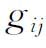
中所有的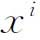
要代以它们用所有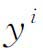
表示的值。为了证明（8）式成立，我们只需在（6）式中代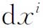
以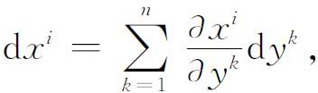
代
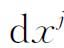
以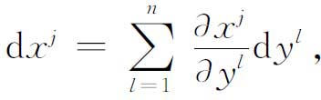
再提出
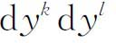
的系数。这样，虽然Gkl并不就是gkl，我们却知道如何从gkl得到Gkl。基本二次形式的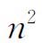
个系数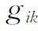
所形成的一组数是一个2阶协变张量，其变换规则由（8）给出。里奇还引进了反变（contravariant）张量。考虑前面用过的变换的逆变换。若这个逆变换是
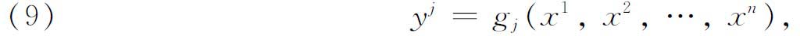
则
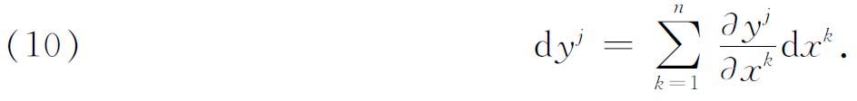
现在，如果把所有的
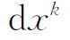
看做构成一个张量的一组量，那么我们可以看到，当然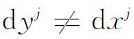
，但是用（10）说明的变换规则，我们能够从所有的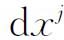
得到所有的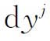
。元素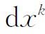
所成的组称为1阶反变张量，反变这个词是指在这个变换中出现的那些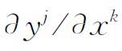
，同（8）和（5）中出现的导数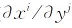
相反。这样，变换变量的各个微分就构成一个1阶反变张量。相应地，我们能够有两个指标反变的2阶张量。如果在变换（9）下，函数组
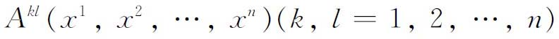
的变换规则是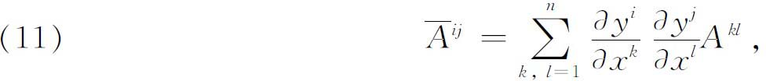
则这个组是一个2阶反变张量。此外，我们能够有所谓混合（mixed）张量，它的某些指标是协变的，而另一些指标是反变的。例如，数组
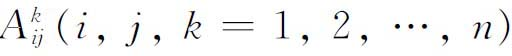
表示一个混合张量，其中（按照里奇的表示法）两个下标是协变的，一个上标是反变的。元素为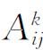
的张量称为3阶张量。我们还能够有r阶的协变、反变和混合张量。一个r阶的n维张量将有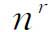
个分量。在第37章中的方程（21）表明黎曼的四指标记号（rk，ih）是一个4阶协变张量。1阶协变张量是一个向量。对于一个向量，列维-齐维塔如下定义一个与之相关的反变向量：如果组λi是一个协变向量的分量，则组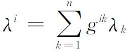
是一个相关的反变向量；是一个商，它的分子是全部所形成的行列式中元素的余子式，它的分母是行列式的值g。
张量有运算。例如，如果我们有两个同类的张量，即有相同个数协变指标和相同个数反变指标的张量，我们就可以通过把它们具相同指标的分量相加而把这两个张量加起来。例如
必须而且能够证明，构成一个具协变指标i和反变指标j的张量。
可以把指标遍历1到n的任意两个张量相乘。举一个例子就足以说明这个意思。例如
对于具有这个分量的张量，能够证明，它的下标是协变的而上标是反变的。张量没有除法运算。
缩并运算（operation of contraction）可用下述例子来说明：给定张量，定义量
这里在右边我们把分量加起来。能够证明，数组是一个具协变指标i和反变指标h的2阶张量。
总之，一个张量是一组函数（分量），它们相对于一个参考标架或坐标系而言是固定的，在坐标变换下它们按一定的规则变换。一个坐标系中的每一个分量，是另一个坐标系中的所有分量的线性齐次函数。如果在同一个坐标系中，一个张量的所有分量等于另一个张量的所有分量，那么它们在所有坐标系中都是相等的。特别地，如果在一个坐标系中的分量全为0，那么在所有坐标系中也全为0。于是，张量的相等相对于参考系的变换是不变的。一个张量在一个坐标系中所具有的物理的、几何的甚至纯数学的意义，在坐标变换下保持不变，所以在第二个坐标系中仍然具有这些意义。这个性质在相对论中有重要的意义，在相对论中每一个观测者都有他自己的坐标系。因为客观的物理规律是对所有观测者都成立的规律，所以为了反映同坐标系的这种无关性，这些规律都表示成张量。
利用掌握的张量概念，可以把黎曼几何中的许多概念重新用张量形式来表示。或许最重要的就是空间的曲率。黎曼的曲率概念（第37章第3节）可以用多种方式表示成一个张量。近代的表示法使用爱因斯坦所引进的求和约定，即如果在两个记号的乘积中有一个指标是重复的，那就理解成为求和。例如
用这种记号表示曲率张量（参看第37章的［20］），有
或等价地
其中，方括号表示第一类克里斯托费尔记号，大括号表示第二类克里斯托费尔记号。这两种形式中的任何一种现在都叫黎曼-克里斯托费尔曲率张量。由于在分量之间有某些关系（这些关系我们不准备叙述），这个张量的不同分量的数目是。当n＝4时（在广义相对论中就是这种情形），不同分量的数目是20。在二维黎曼空间中，只有一个不同的分量，它可以取为R1212。这时高斯的总曲率K可以证明是
其中g是所有的行列式或。如果所有的分量全是零，空间便是欧几里得的。
里奇从黎曼-克里斯托费尔张量用缩并的方法得到一个张量，现在称为里奇张量。这个张量的分量是。当n＝4时，爱因斯坦(3)用这个张量表示他的空-时黎曼几何的曲率。